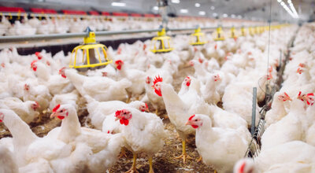
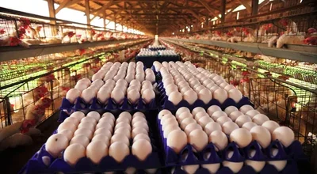
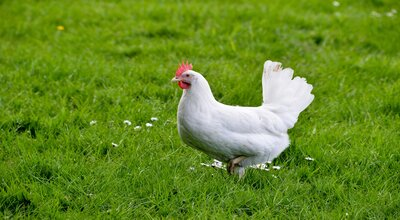

-  Show com foco em novas tecnologias, evento especializado em avicultura retorna à EuroTier 2024
-  Granja de ovos aposta em tecnologia, bem-estar das aves e criação orgânica As granjas de galinhas vêm evoluindo a cada dia. A preocupação com o bem-estar do animal e o uso de recursos tecnológicos cresce cada vez mais.
-  Tecnologia transforma amônia produzida no aviário em fertilizante